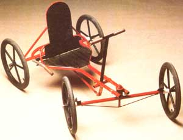
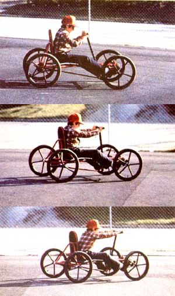

"Pedal power" has been around for a good long time... but this biceps-builder proves that...
With warmer weather just around the corner, it won't be long before the neighborhood streets and sidewalks are fairly humming with bicycles of all shapes and sizes. But two-wheelers don't have to be the only game in town ... especially for the younger set. In fact, MOM's merry researchers recently decided to spend a bit of time developing the four-wheeled "pumper" you see in the photos accompanying this article.
This sporty little runabout-which is merely a homebuilt and simplified version of the once popular "Irish mail" handcar-is constructed almost entirely of electrical metallic tubing (about $20 worth) and thus is fairly inexpensive to put together. The vehicle's cost is further reduced (and the toy made stronger in the process) by the five-spoke "mag"-style wheels, which we made from discarded rims and sections of cut-to-length E.M.T.
Of course, you'll need to have access to a small welder and two different tubing benders (to handle 1/2 " and 1" E.M.T.) in order to complete the car, but if you can borrow these tools-or buy them with an eye toward future projects-you'll be all set. Other than that, even a relatively modest home shop should easily supply you with the equipment necessary to get the job done: a hacksaw, an electric drill with bits, a screwdriver, a round file,. a measuring tape, a pipe wrench, and a coping saw.
Our illustration details the parts that are required to make the pump scooter. But before you start gathering and cutting your building materials, it might help you to know that, if you're purchasing the electrical conduit new (in 10-foot lengths), you'll need two complete 1" sections, one 3/4" piece, and three 1/2 " lengths to handle most of the job. (You will have to get an additional 2 feet of the 1/2 " size and an 8" length of 1-1/4" tubing to finish up.) Likewise, the two-piece seat can be cut from a single 20" X 28" slab of 1/4 " plywood.
The chassis is made from two 58" lengths of 1" conduit which are bent to the same contour, then joined together to form a sort of paddle shape. To curve these sections properly, choose one, and-starting at either end-measure off 4 inches, make a 90' bend at that point (which should eat up about 10 inches), mark off 5 more inches, start a second arc (this one a 5-inch-gobbling 45° ), leave 8 inches straight, form the final 45' curve, then determine the length of the remaining leg (it should be about 21 inches).
Once you've curved a pair of the tubular side rails, join them together by temporarily placing your 1-1/2" pipe coupling between the parallel front tubes (it'll serve as a spacer), then welding the butted rear tips to each other ... with a scrap of 1"-diameter mechanical tubing (or filed-down 3/4" pipe) inside both parts to serve as a bridge.
The rear axle housings are welded to the chassis next, and these should be positioned so they intersect the right-angle bends at midpoint, yet are-them-selves-equally divided by the joint. A 2-1/2" section of 1/2" conduit holds each one to the frame at the inner ends, but-since the goal is to mount the housings true for proper wheel alignment and camber-these stubs may have to be made slightly longer or shorter to suit your homemade chassis.
The rest of the frame components are made from 1/2" E.M.T., and these can be fine-trimmed, too, as necessary. A 20" crossmember fastens between the side rails at a point 10-1/2 inches forward of the butt joint at the rear, then two 90' pieces-one 9" and the other 24" in total length-are arranged in the same manner, to help support the plywood seat.
To form the seat-back frame, we bent a 30-1/2" and a 35" conduit section into the shapes indicated, then welded the wider piece to the upper surface of the frame rails (1 inch forward of the crossmember) at an angle of 60'. The narrow hoop mounts atop that, at an 85° bias to the chassis ... and the seat-back strut, along with the 41-1/2" rear support, is fastened in place to lock the axle housings to the seat structure.
At this point, you'll need to complete the steering hub and pump-handle components. Both of these parts have to be adjustable, so they're designed to slide within the parallel front frame rails as necessary, and can be held in place with hose clamps.
The hub is simply the 1-1/2" pipe coupling welded to each half of a longitudinally split section of 1- 1/4 " E.M.T., then capped at each end with 11/2" to 3/4" pipe bushings. (The threads within the center hole in each reducer must be filed out if it's to accept the shank of a 3/4 " nipple.)
The handle is nothing more than a section of 1" conduit, equipped with a 3/4 " X 14" upper grip bar and a 1" X 7" pivot shaft-at the lower end-made from a scrap of mechanical tubing (this piece can be replaced with a length of 3/4" pipe if you don't mind filing its outer surface a bit). A 3/16" X 1-1/2" X 7" hunk of flat metalwelded perpendicularly to the midpoint of the pinion-functions as the drive lever, and the I " shaft rides inside a pair of 1" X 2-1/4" E.M.T. stubs ... which, in turn, are clipped to the chassis rails with half-sections of 1- 1/4 " conduit and hose clamps.
A buttress front axle allows easy foot steering, and it's made by welding [1] a 3" piece of 1/2" E.M.T., then [2] a 2-1/2" washer and 3/4" X 3-3/4" pipe nipple combination to the center of the 1" X 30 " conduit axle housing at a perpendicular to that part. A 27" length of 1/4" reinforcing rod trusses the assembly, and two angle iron sections-fastened to the ends of the housing and tilted toward the rider-form modest footrests. (The axle itself is merely a 40" stretch of 3/4" conduit run through the housing. The front wheel hubs ride on that shaft, and are held in place with 1/4" bolts pinned through the tube's ends.)
To attach the front assembly to the steering hub, just slip the 3/4" pipe center pivot through the two bushings in your coupling, and lock it in place with a large washer and a 3/4" pipe cap.
The drive and brake mechanisms also work on a sleeve-within-a-sleeve principle. The 3/4" X 17-1/2" drive axle shaft utilizes a 3/16" X 1-1/2" X 5" flat metal crank throw (a 2-1/2" washer, welded in place 1 inch from that bar, makes a good walk stop), and the braked (right side) wheel is fastened to a 3/4" shaft that houses-and is bolted to-a 1/2" X 1 7 1/2" pipe, which is connected to a 5-1/2" pulley. The right axle shaft uses an antislide washer, as does the drive axle, and it's carried inside the axle housing as well.
A one-wheel brake is all that's needed for this simple pumpabout, and we worked that out by tacking a 1" X 9" E.M.T. housing to the upper part of the chassis just behind the crossmember. Two more conduit sections, welded at a right angle, provided a brake handle and shaft, then-once this control was slipped into place and a small spacer and stop were installed-a 27" length of strapping band was fastened between the brake shaft and the crossmember (with the pulley nestled in the loop thus created). In practice, this arrangement works reasonably well, since a good deal of tension can be drawn on the strap through the mechanical advantage of the small pivot. But the system performs even better if the pulley groove is covered with a steel band itself, and the inner side of the steel loop is then faced with a strip of "grabby" rubber matting.
All the cart's wheels were fabricated from E.M.T. scraps and discarded bike rims, since regular spoked wheels wouldn't likely stand up to the side thrusts placed upon them by a "four-footer". To make our sturdy units, we simply used 1 " X 4 " conduit hubs, centered within the rims, and cut five 1/2" spokes to length (from 7" to 7-1/8" long, depending on the design of the rim) for each. Your work will be easier if you lay the rim on a slab of plywood, mark its circumference, then bore a hub-holding hole dead center. By using spacer blocks to lift the rim and spokes to the hub's midlevel, you can tack all of your parts in place first, then finish welding them once you're satisfied with the assembly.
When the wheels are bolted on their respective axle shafts (short lengths of vacuum-cleaner hose make nice grease covers to fit over the axles between the hubs and the housings), you can complete the pumper by fastening the seat boards and the connecting rod in place. That 1/2" X 29-1/2" arm, by the way, has a small offset in it-at a point about 4 inches from the crank endto keep it centered ... and a 1 " piece of conduit, welded to that same tip, provides a mount for the crank bolt. At the opposite end, a 1/2" nut allows for the installation (and adjustment) of an eyebolt, or-if you have expensive tastes-a Heim joint.
Finally, with everything welded, bolted, and screwed in position, you can paint your chariot ... and then just try to keep the young'uns off it till the coating dries!
CLICK HERE FOR FULL DETAIL OF A PUMP SCOOTER
EDITOR'S NOTE: Conventional bikes can be fun - and thrifty - as well... and for more on that, turn to page 118 of this issue.
|
 |
 |
|